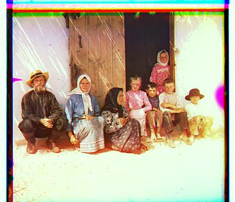
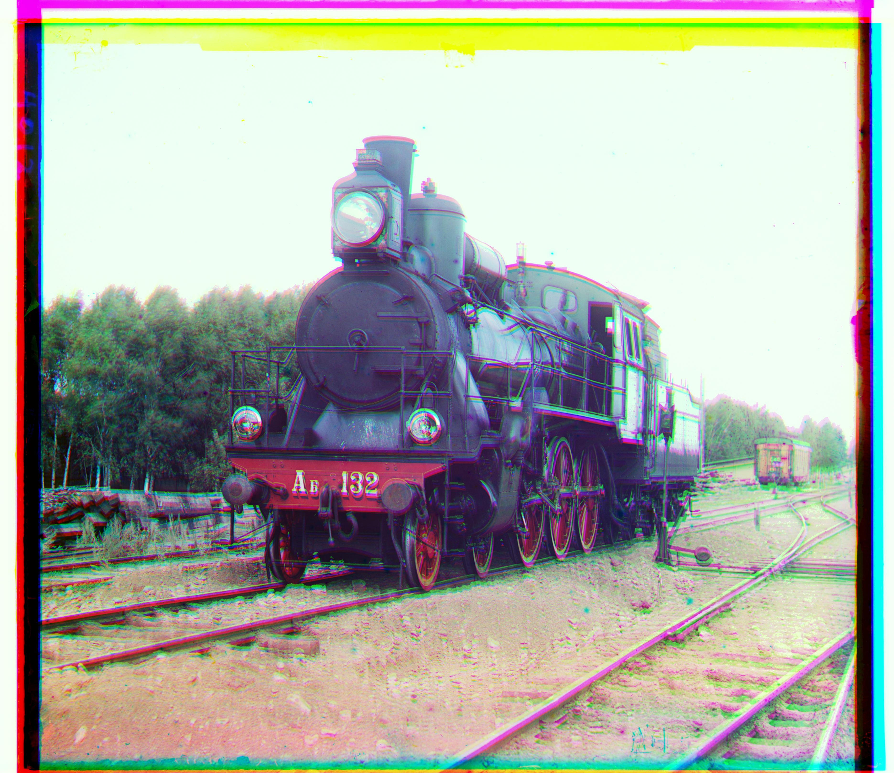

Sergei Mikhailovich Prokudin-Gorskii created the possibility for color pictures back when everything was still in black and white. Essentially, he used 3 different color filters to take the same picture, and then the RGB image was able to be recreated from aligning the 3 different exposures on top of each other.
I started by breaking down the image block into its respective RGB components, ignoring a percentage of each edge to compensate for the border, and then aligned the green and red filter on top of the blue one (for some images like Emir and Monastery, I aligned the blue and red on top of the green, because of the heavy focus on the blue in those images, which would render the green and red filters quite useless in the algorithm). I then used a NCC algorithm, which is a normalization across the two images. For the larger images, I used an image pyramid to first scale the filters, then used the NCC once the image was small enough to run efficiently on. Finally, with the shifts and displacements, I aligned the 3 filters on top of each other using the skimage library, and produced a color image.
Images like Icon and Village cam out a little blurry as it was challenging to align images where the core of the image was very one dimensional in color. For each filter, almost all of the image was more or less a shade of dark grey, and in addition to the complicated edges and details, the image did not come out to be as aligned as some of the others.
![Cathedral: G=[5, 2], R=[12, 3]](out_path/cathedral.jpg){kind=link}
![Monastery: B=[3, 0], R=[6, 1]](out_path/monastery.jpg){kind=link}
![ Settlers: G=[7, 0], R=[15, 0]](out_path/settlers.jpg){kind=link}
![Nativity: G=[3, 1], R=[7, 0]](out_path/nativity.jpg){kind=link}
![Harvesters: G=[64, 32], R=[128, 0]](out_path/harvesters.jpg){kind=link}
![Emir: B=[0, 0], R=[64, 32]](out_path/emir.jpg){kind=link}
![Icon: G=[32, 0], R=[96, 32]](out_path/icon.jpg){kind=link}
![Lady: G=[64, 0], R=[128, 0]](out_path/lady.jpg){kind=link}
![Self Portrait: B=[0, 0], R=[96, 0]](out_path/self_portrait.jpg){kind=link}
![Three Generations: G=[64, 0], R=[128, 0]](out_path/three_generations.jpg){kind=link}
![ Train: G=[32, 0], R=[96, 32]](out_path/train.jpg){kind=link}
![Turkmen: G=[64, 32], R=[128, 32]](out_path/turkmen.jpg){kind=link}
![Village: G=[64, 0], R=[160, 32]](out_path/village.jpg){kind=link}
![Porch: G=[1, 0], R=[2, 0]](out_path/porch.jpg){kind=link}
![House: G=[3, 0], R=[7, 0]](out_path/house.jpg){kind=link}
![Guardhouse: G=[0, 1], R=[1, 2]](out_path/guardhouse.jpg){kind=link}